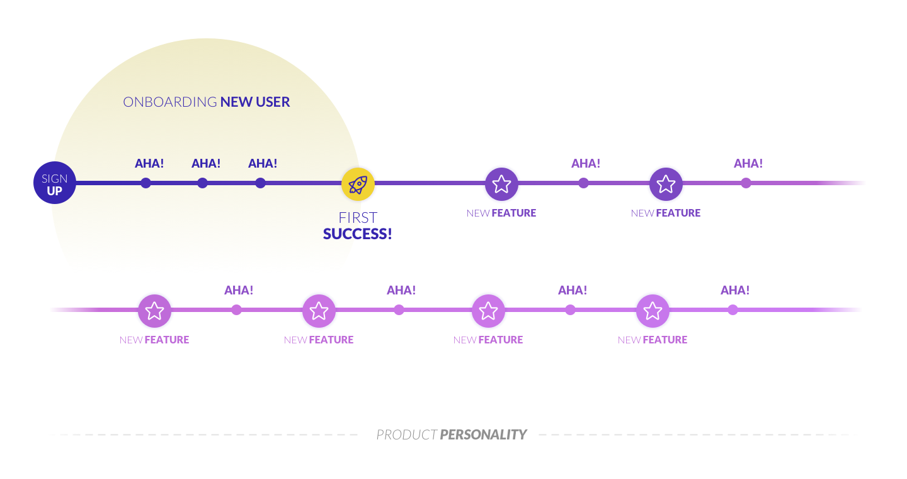
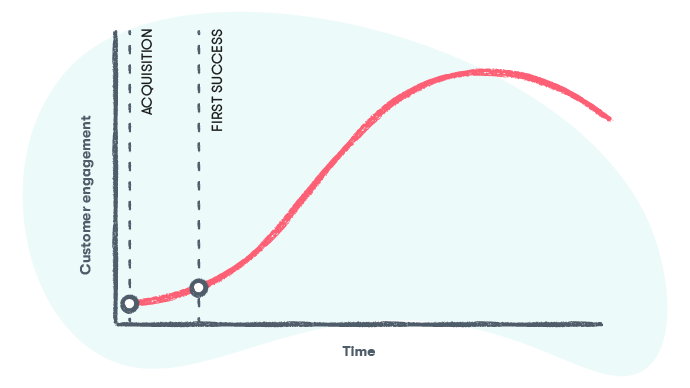
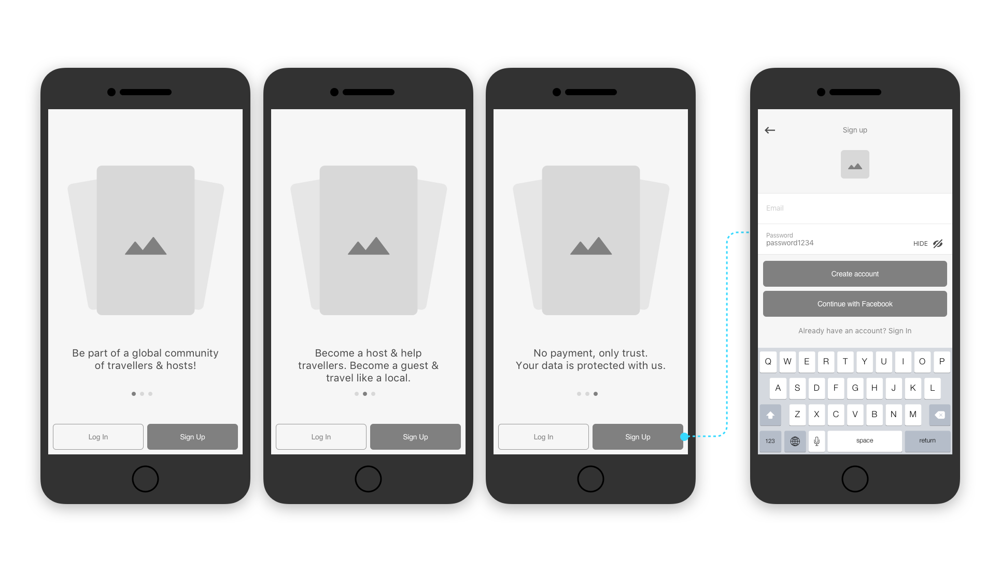
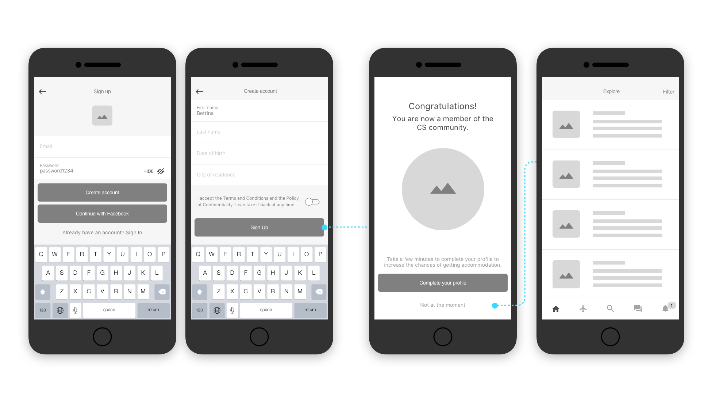
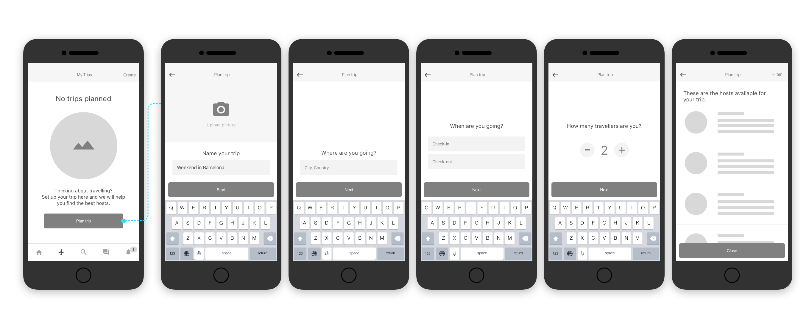
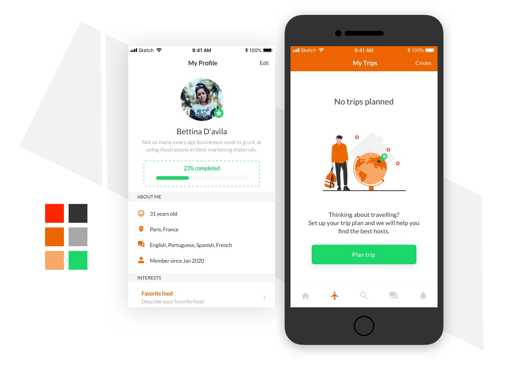

This case study is a side project, with no commercial intentions.
CouchSurfing is a homestay and social networking service accessible via a website and a mobile app. The platform is a gift economy; hosts are not allowed to charge for lodging. It is based on the idea that people are generally kind.
I would say any peer-to-peer solution currently available in the market requires a significant trust to be developed for product success. Why? Because they should address the users directly (how to increase customer sign up, for example), as opposed to other solutions for businesses that are based on licensing and other strategies for engagement. In the tech industry, specially after Cambridge Analytica scandal, trust means fully transparency on data privacy: "what will you do with my personal information?" or "why should I give it to you?". People and products might have some things in common: they can all be transparent, reliable, helpful, secure.
The entire UX of a product is important, but there are moments through the end-to-end product experience where trust is really important or significantly effected: the Aha! moments. When we map the aha! moments and the key milestones lived by the user, we can transform these key points into strategies for customer delight and retention.
The onboarding strategy is definitely one of them. A successful product should not only be successful in increasing the number of registrations but also in retaining users through constant engagement. The key is to understand the user journey in all of their touch-points, in and out of the screen. For more details, here's an article I wrote about the importance of user onboarding.
And what is a aha! moment? This is a phenomenon in the software business, the point where the clouds suddenly part for the user and the benefits immediately become excitingly clear. It is the must-have experience that keeps people coming back, and make sure new users experience it. Sadly, this aha! moment usually comes way too late: if it's too deep inside the product, you’ve already lost. The key is to get the users to understand the product in the context of their own lives.
And what about the key milestones? For most businesses, there are two key milestones that need to be reached before a customer can reach their full value potential:
As you can see on the first infographic, there can be many aha! moments between the sign up and first success. So, to finally respond to the challenge questions:
Besides grasping the sign up process (question 1), I will choose these two "moments that matter" in the user journey for question 2: one aha! moment after the sign up & the user first success.
On Couchsurfing, this will be translated as:
Here are my suggestions for the Couchsurfing app based on my previous arguments.
Always be transparent and make users know the benefits they'll get in their lives when they are delivering any personal information. That makes users more confident about what they are getting next.
Apart from avoiding any discomfort for users whose gender are non-conformist, removing this field makes the sign up process shorter and easier to be accomplished.
Build for context and help users achieve the most of the benefits the product provides. When landing on an empty screen, we should point the user to the next important action. For example: complete the profile, confirm email or get the profile verified.
Currently the profile form is very long and dull. Moreover, when you try to a different screen to request a stay, if you have not enough information on your profile, you'll get a message saying you need at least 50% of the profile complemented to request it.
This increases transparency and improve usability.
Gamification makes the process more dynamic and interactive, which might help people engage better with their task. Plus, the more people fill out their profile, the better we can ensure trust within the Couchsurfing community.

Although the scope of this case study is not a high-fidelity prototype of the solution, I wanted to help materialize my ideas by adding a little bit of visual UI to one of the screens.
Here is the application of a color palette whereas the primary color is the Couch Surfing orange. In order to highlight the main actions and information in the app, I included an opposite color, thus the light green. The rest of the palette is a combination of different iluminations of the primary color for shades and less contrastant UI elements, plus the grey for background and dividersn and black for texts.
